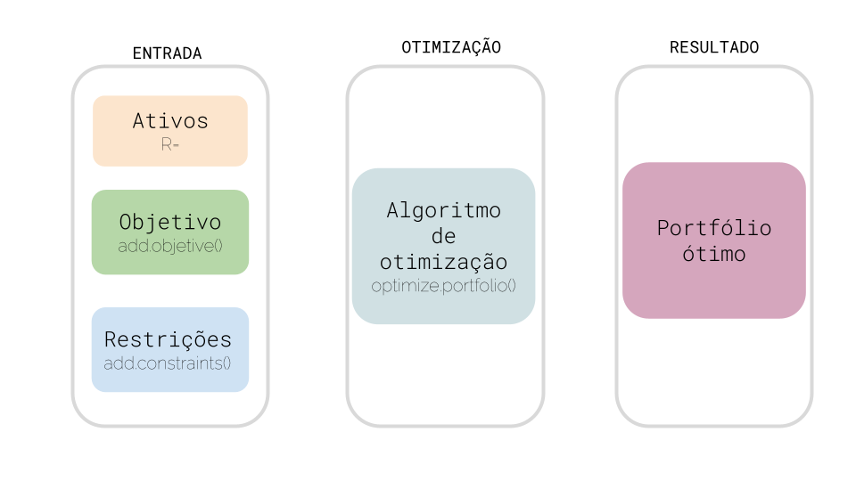

Análise de Portfolio com R - PortfolioAnalytics
Introdução
A teória moderna do Portfólio foi introduzida por Harry Markowitz em 1952. Em geral, esta teoria afirma que o objetivo do investidor é maximizar os retornos esperados do portfólio para um dado nível de risco.
Por exemplo, o retorno de um portfólio (\(r_{\text{portfolio}}\)) com cinco ativos é dado pela soma dos retornos dos ativos individuais ponderados por seus pesos (\(W_i\)) na carteira.
\[r_{\text{portfolio}, t} = \sum_{i=1}^5 W_i r_{i,t}\] Assim, dado cinco ativos, estamos interessados em saber o quanto deve ser alocado para cada ativo, para que tenhamos o retorno máximo para um dado nível de risco.
Este objetivo envolve maximizar uma medida de ganho por unidade de risco ou mesmo a minimização da medida de risco. Mas como definir risco? E se quisermos definir objetivos e restrições mais complexos?
Para além das formulações clássicas de Markowitz, podemos estar interessados em definir o problema de minimização de risco em outros termos. Por exemplo, podemos definir risco como a variância do portfólio (volatilidade), mas em uma circunstância específica podemos estar interessados em minimizar o risco da cauda para nos ajudar a evitar perdas extremas.
Da mesma forma, o problema de maximização de retorno pode ser visto por outras óticas, como maximizar um retorno ajustado ao risco, usando medidas como a razão de Sharpe ou a razão de informação.
Em termos de restrições, nosso problema específico pode envolver fixar um valor mínimo e máximo que será investido em cada ativo. Podemos estabelecer por exemplo, fixar que um ativo particular não pode representar mais do que 60% do valor investido. Podemos ainda tentar encontrar portfólios altamente diversificados em detrimentos de um conjunto concentrado de ativos.
Pacote PortfolioAnalytics
Para resolver estes problemas menos convencionais, podemos nos valer do pacote PortfolioAnalytics. Este pacote fornece soluções numéricas para problemas de portfólio com restrições complexas. Este tipo de generalidade das possibilidades de restrições e funções objetivas, distinguem o pacote de competidores como o pacote fPortfolio, que são mais indicados para problemas padrões de Markowitz.
Assim, o pacote PortfolioAnalytics pode resolver problemas genéricos do tipo
\[\min_w g(w) \] \[\text{sujeito a } h_1(w) \leq 0\] \[...\] \[h_q(w) \leq 0\]
Após ter o problema montado, o valor ótimo desta função é encontrado a partir de um algorítimo de Differential Evolution (DE).

Principais funções de PortfolioAnalytics
As principais funções do pacote são:
portfolio.spec(assets): é a primeira função que utilizaremos. Nelas podemos especificar o portfólio inicial. O argumentoassetsé uma lista de ativos ou um número indicando o número de ativos.add.objetive(portfolio, type, name): cria funções objetivas para serem adicionadas ao objetivoportfolio. Podemos definir funções objetivos de minimização de risco ou maximização de retornos, por exemplo.add.constraints(portfolio, type)adiciona as restrições desejadas ao objetoportfoliocriado acima. Por exemplo, podemos definir que a soma dos pesos deve ser igual a unidade.optimize.portfolio(R, portfolio): com o objetoportfoliodefinido, o algorítmo de otimização pode encontrar os pesos que resolvem o problema definido (objetivo e restrições).optimize.portfolio.rebalancing(R, portfolio, rebalance_on, trailing_periods): Uma forma diferente de resolver o problema de otimização. Podemos elaborar uma estratégia em que os pesos do portfólio são recalculados periodicamente (mensalmente, trimestralmente ou anualmente).
Outras funções objetivos e restrições
O objetivo do post será resolver três problemas simples: um portfólio que minimiza riscos, um que maximiza retornos e outro que maximiza a razão de Sharpe (uma medida que pondera o retorno pelo risco do ativo). Mas as possibilidades não se restringem a estas três opções. Entre os tipos de funções objetivos que PortfolioAnalytics é capaz de resolver temos:
Minimização de risco:
add.objetive(type = "risk", name = "var"): com este objetivo, podemos encontrar o portfólio com menor risco.Maximização de retorno:
add.objetive(type = "return", name = "mean"): definindo esta função objetivo, o algorítmo vai encontrar o portfólio com o maior retorno médio.Especificação de limites na contribuição de risco:
add.objetive(type = "risk_budget", name = "ETL", arguments = list(0.95), max_prisk=0.3): Um tipo especial de objetivo, em que podemos definir um valor máximo que um ativo pode contribuir para o risco total do portfólio. Por exemplo, podemos definir que um ativo em específico não pode contribuir com mais que 30% do risco total de um portfólio.Minimização da concentração de pesos:
add.objective(portfolio=pspec, type="weight_concentration", name="HHI", conc_aversion=0.1): Com esta função objetivo, podemos minimizar a concentração do portfólio em alguns ativos com o uso de um coeficiente de aversão.
Já em termos de restrições, os problemas que resolveremos no post envolverão limites sobre os pesos dos ativos. Mas o pacote PortfolioAnalysis permite ainda uma série de outras restrições.Alguns exemplos de restrições adicionais:
Limites de posições
type = position_limit: com esta restrição, podemos encontrar apenas portfólios com um número máximo de ativos com peso não-zero);Restrições de diversificação
type = "diversification: com esta restrição, podemos definir o valor alvo de diversificação \(\sum_{i=1}^N w_i^2\).Alvo para o retorno:
type = "return", com esta restrição podemos estipular um alvo para a média do retorno comreturn_target. Permitindo por exemplo, a miminização do risco sujeito a um nível de retorno.Fator de exposição
type = "factor_exposure": podemos definir limites máximos e mínimos para fatores de exposição ao risco, como os valores de beta dos ativos.
Muitas outras funções objetivos e restrições são possíveis de serem calculadas com este pacote. Podemos, por exemplo, limitar nosso portfólio por grupo de empresas: 30% para empresas de tecnologia, 40% para empresas do setor bancário, etc. Mais informações podem ser encontradas na documentação do pacote.
Dados
Nesse post vamos selecionar algumas empresas negociadas na B3 e utilizar três estratégias de seleção de portfólio: uma que maximiza o retorno médio, outra que minimiza o risco dos ativos e outra que maximiza a razão de Sharpe. Inicialmente resolveremos um problema de único período, com a função optimize.portfolio.
Antes de começarmos, vamos carregar os pacotes que serão utilizados ao longo da análise. É sempre boa prática carrega-los no inicio.
rm(list = ls())
# o código abaixo instala o pacote "needs" caso não tenha instalado na sua máquina
# install.packages("needs")
needs::needs(tidyverse, tidyquant, ROI.plugin.quadprog, timetk,
ROI.plugin.glpk, PortfolioAnalytics)Para nossa análise de portfólio vamos escolher alguma das empresas mais negóciadas na B3. Em tickers vamos guardar os tickers das empresas selecionadas. Além disto, vamos iniciar nossa análise a partir de 2012, uma data completamente arbitrária.
data_inicial <- "2012-01-01"
data_final <- "2021-12-10"
tickers <- c("MGLU3.SA",
"ABEV3.SA",
"BBDC3.SA",
"EMBR3.SA",
"JBSS3.SA",
"PETR3.SA",
"VALE3.SA",
"WEGE3.SA")Para obter os dados de preço das ações selecionadas vamos utilizar o pacote TidyQuant. Ele fornece uma função bastante conveniente para baixar dados de ações com apenas o nome do ticker e o período: a função tq_get().
Os dados da tabela 1 possuem uma série de informações sobre as empresas negociadas no B3, com atributos de valor de abertura, fechamento, fechamento ajustado e volume negociado para cada dia do período entre Janeiro de 2012 e dezembro de 2021.
tbl_precos <- tidyquant::tq_get(
x = tickers,
get = "stock.prices",
from = data_inicial
)
tbl_precos %>%
head() %>%
knitr::kable(caption = "Informações sobre empresas da B3 extraídos da API Yahoo")| symbol | date | open | high | low | close | volume | adjusted |
|---|---|---|---|---|---|---|---|
| MGLU3.SA | 2012-01-02 | 0.296562 | 0.296562 | 0.290625 | 0.290625 | 8681600 | 0.261855 |
| MGLU3.SA | 2012-01-03 | 0.293750 | 0.295312 | 0.288750 | 0.288750 | 23385600 | 0.260165 |
| MGLU3.SA | 2012-01-04 | 0.289687 | 0.289687 | 0.283125 | 0.285937 | 19008000 | 0.257631 |
| MGLU3.SA | 2012-01-05 | 0.286250 | 0.286250 | 0.282812 | 0.283437 | 7024000 | 0.255378 |
| MGLU3.SA | 2012-01-06 | 0.283750 | 0.291250 | 0.279687 | 0.291250 | 19286400 | 0.262418 |
| MGLU3.SA | 2012-01-09 | 0.290937 | 0.290937 | 0.283437 | 0.288437 | 13600000 | 0.259883 |
Para nossa análise, vamos trabalhar apenas com o valor de fechamento ajustado das ações. Mas antes precisamos converter o preço da ação em retornos.
A tabela 2 mostra qual é o resultado da transformação dos preços em retornos.
tbl_retornos <- tbl_precos %>%
group_by(symbol) %>%
tidyquant::tq_transmute(
select = adjusted,
col_rename = "retorno",
mutate_fun = periodReturn,
period = "monthly",
type = "arithmetic",
leading = FALSE,
indexAt = "lastof"
) %>%
rename(ativo = symbol,
data = date
) %>%
na.omit()
tbl_retornos %>%
head() %>%
knitr::kable(caption = "Tabela de retornos das empresas selecionadas")| ativo | data | retorno |
|---|---|---|
| MGLU3.SA | 2012-02-29 | 0.1826341 |
| MGLU3.SA | 2012-03-31 | 0.0092851 |
| MGLU3.SA | 2012-04-30 | -0.0484958 |
| MGLU3.SA | 2012-05-31 | -0.1790712 |
| MGLU3.SA | 2012-06-30 | 0.0075045 |
| MGLU3.SA | 2012-07-31 | 0.0904247 |
A função tq_transmute() permite calcular o retorno mensal para o valor de fechamento ajustado da ação. Para isto, precisamos indicar qual a variável que sofrerá a transformação (adjusted), qual a transformação utilizada (mutate_fun = periodReturn) e qual a periodicidade do cálculo (period = "monthly"). Por fim, na.omit() é utilizado para excluir linhas que possuam retorno NA. Este é o caso do primeiro mês da amostra.
Estatísticas descritivas
É sempre boa prática verificar a média e desvio padrão dos retornos, que representam o retorno médio por ativo e a volatidade do ativo. A tabela @reff(tab:media-desvio) mostram estas estatísticas descritivas.
tbl_retornos %>%
group_by(ativo) %>%
summarise(`Média` = mean(retorno),
`Desvio-padrão` = sd(retorno)) %>%
knitr::kable(caption = "Média e Desvio-padrão dos ativos")| ativo | Média | Desvio-padrão |
|---|---|---|
| ABEV3.SA | 0.0087075 | 0.0674682 |
| BBDC3.SA | 0.0116825 | 0.0916488 |
| EMBR3.SA | 0.0109486 | 0.1065495 |
| JBSS3.SA | 0.0224573 | 0.1131114 |
| MGLU3.SA | 0.0435138 | 0.2000139 |
| PETR3.SA | 0.0139661 | 0.1414935 |
| VALE3.SA | 0.0148660 | 0.1093709 |
| WEGE3.SA | 0.0260981 | 0.0801259 |
Já a figura 1 exibe o retorno acumulado para as empresas selecionadas.
tbl_retornos %>%
group_by(ativo) %>%
mutate(retorno_acumulado = cumsum(retorno)) %>%
ggplot(aes(x = data, y = retorno_acumulado, color = ativo)) +
geom_line() +
geom_vline(xintercept = as.Date("2020-03-01"), linetype = 2, color = "red") +
geom_hline(yintercept = 0, linetype = 2) +
scale_y_continuous(labels = scales::percent) +
labs(x = "", y = "Retorno acumulado",
title = "Retorno acumulado por empresa selecionada, 2017-2020",
subtitle = "Linha vermelha representa o início da crise de Covid-19") +
facet_wrap(~ativo, scales = "free_y", ncol = 2) +
theme(legend.position = "none",
axis.text.x = element_text(angle=45, size = 8))
Figure 1: Retorno acumulado por empresa selecionada, 2017-2021
Contudo, o pacote PortfolioAnalytics não gosta deste formato dos dados. O formato original, que podemos chamar de tidy, apresenta uma única coluna que indica o nome das empresas e uma única coluna que informa os retornos. Precisamos converter para o formato wider, em que cada empresa tem sua própria coluna de retornos.
A tabela 4 mostra o novo formato dos dados, onde cada empresa ocupa uma coluna. Também vamos criar um período de treinamento, em que o portfolio é otimizado (entre 2012 e 2020), para ser testado e comparado com um benchmarking durante 2021.
tbl_retornos_wide <- tbl_retornos %>%
pivot_wider(names_from = ativo,
values_from = retorno
) %>%
column_to_rownames("data") %>%
as.xts()
tbl_retornos_wide_training <- tbl_retornos %>%
filter(data < as.Date("2021-01-01")) %>%
pivot_wider(names_from = ativo,
values_from = retorno
) %>%
column_to_rownames("data") %>%
as.xts()
tbl_retornos_wide_training %>%
head() %>%
knitr::kable(caption = "Tabela de retornos no formato wide")| MGLU3.SA | ABEV3.SA | BBDC3.SA | EMBR3.SA | JBSS3.SA | PETR3.SA | VALE3.SA | WEGE3.SA |
|---|---|---|---|---|---|---|---|
| 0.182634062 | 0.11769176 | 0.027945006 | 0.06136012 | 0.14241022 | -0.04496462 | -0.02572697 | -0.01227134 |
| 0.009285096 | 0.09766948 | 0.025695354 | 0.14374988 | 0.02739719 | -0.04979342 | -0.01492530 | 0.04009375 |
| -0.048495773 | 0.07114161 | -0.051420149 | 0.12295077 | 0.00000000 | -0.07860092 | 0.01799848 | 0.01717146 |
| -0.179071219 | -0.07150281 | -0.036454059 | -0.12712896 | -0.27333348 | -0.10691652 | -0.11760559 | 0.03277080 |
| 0.007504505 | 0.01255177 | 0.009579797 | -0.06348695 | 0.10642209 | -0.04545461 | 0.06757121 | -0.05978129 |
| 0.090424729 | 0.01804931 | 0.056351662 | -0.01646687 | -0.11111118 | 0.06084673 | -0.07425858 | -0.04497375 |
Este procedimento de treinamento e teste será feito manualmente na primeira parte do post, mas com a função optimize.portfolio.rebalancing podemos realizar um processo de maneira mais automática.
Análise de Portfólio para Período Único
Nossa tarefa agora é construir diferentes portfólios. Para tanto, iremos utilizar três estratégias de seleção de portfólios: a de minimização do risco, a de maximização do retorno e a de maximização do risco de Sharpe. Para tanto, utilizaremos os dados até dezembro de 2020 para escolher os portfólios, e depois verificaremos como estes portfólios teriam se comportamento em 2021.
Portfólio com Variância Mínima Global
Começamos com um problema de otimização que busca obter os pesos que nos forneça a menor variâcia possível (a volatilidade do portfólio). Volatilidade é uma medida de risco, e portanto, quanto menor a volatilidade, menor o risco em um portfólio.
Dito isto, nosso objetivo se torna encontrar os pesos que minimizem nossa variância sujeito a duas restrições:
que a soma dos pesos dos ativos seja a unidade; e
que cada ativo represente no mínimo 5% do total investido e no máximo 60%.
A primeira restrição garante o investimento completo (full investiment), ou seja, que utilizaremos todos os recursos disponíveis. A segunda restrição garante que todos os ativos farão parte do portfólio, ao mesmo tempo que não permite que um ativo domine todo o investimento.
Este problema pode ser anunciado matematicamente da seguinte forma:
\[\min \sigma^2 = W^T \sum W\] \[\text{s.a.}\] \[\sum_{i=1}^N W_i = 1\] \[0.05 \leq W_i \leq 0.6\]
Técnicamente, como a função objetiva é quadratica e as restrições são lineares, utilizaremos um solucionador (solver) quadrático. O pacote PortfolioAnalytics utiliza o plugin ROI.plugin.quadprog para resolver este tipo de problema.
Criando o Portfólio
Para implementarmos este problema usando o pacote PortfolioAnalytics precisamos primeiro construir o objeto portfolio com a função porfolio.spec().
Na primeira linha do código abaixo, definimos o portfólio informando a lista de ativos (objeto ticker).
#### Portfólio com a variância mínima global
min_var_portfolio <- portfolio.spec(assets = tickers) %>%
add.constraint(type = "full_investiment") %>%
add.constraint(type = "box", min = 0.05, max = 0.6) %>%
add.objective(type = "risk", name = "var")Na segunda linha de código, definimos a primeira restrição. Definimos o tipo de restrição com type = "full_investiment" (a soma dos pesos será igual a unidade). Esta restrição também pode ser especificada escrevendo add.constraint(type = "weight_sum", min_sum = 0, max_sum = 0).
Na linha 3 escrevemos a restrição de que cada ativo deve ter peso maior que 0,05 e menor que 0,6. Este tipo de restrição é nomeado de type = "box" pelo pacote PortfolioAnalysis. Um caso especial da restrição box é a long. Nela, o valor mínimo é igual a zero e o máximo igual a unidade. Este tipo de restrição pode ser escrito como add.constraint(type = "long_only").
Por fim, na linha 4, definimos o objetivo da otimização. Especificamente definimos que o otimizador deve buscar pesos que minimizem o risco do portfólio.
Rodar a otimização
A função optimize.portfolio() roda a otimização utilizando o solver quadrático. Nesta função passamos os dados, o objeto portfólio criado acima e o método de otimização.
otimizacao_risco <- tbl_retornos_wide_training %>%
optimize.portfolio(
portfolio = min_var_portfolio,
optimize_method = "quadprog",
trace = TRUE
)
otimizacao_risco## ***********************************
## PortfolioAnalytics Optimization
## ***********************************
##
## Call:
## optimize.portfolio(R = ., portfolio = min_var_portfolio, optimize_method = "quadprog",
## trace = TRUE)
##
## Optimal Weights:
## MGLU3.SA ABEV3.SA BBDC3.SA EMBR3.SA JBSS3.SA PETR3.SA VALE3.SA WEGE3.SA
## 0.0500 0.3042 0.0500 0.1409 0.0789 0.0500 0.0765 0.2494
##
## Objective Measure:
## StdDev
## 0.05104A saída da otimização mostra os pesos calculados e a medida de desvio-padrão do portfólio que minimiza risco (0,05104).
Para visualizar melhor os pesos, podemos extrai-los do objeto otimizacao_risco com a função extractWeights e observar na tabela 5 que os pesos estimados são consistentes com as restrinções impostas.
pesos_var_minima <- extractWeights(otimizacao_risco)
tibble(ativos = tickers, pesos = pesos_var_minima) %>%
mutate(soma_pesos = cumsum(pesos)) %>%
knitr::kable(caption = "Conjunto de pesos dos ativos que minimizam o risco do porfólio")| ativos | pesos | soma_pesos |
|---|---|---|
| MGLU3.SA | 0.0500000 | 0.0500000 |
| ABEV3.SA | 0.3042140 | 0.3542140 |
| BBDC3.SA | 0.0500000 | 0.4042140 |
| EMBR3.SA | 0.1409229 | 0.5451369 |
| JBSS3.SA | 0.0789496 | 0.6240865 |
| PETR3.SA | 0.0500000 | 0.6740865 |
| VALE3.SA | 0.0764677 | 0.7505542 |
| WEGE3.SA | 0.2494458 | 1.0000000 |
O ativo com menor peso é o MGLU3, com 5%, respeitando a primeira restrição. Enquanto que a soma dos pesos é igual a unidade, de modo que todo o recurso financeiro será utilizado para comprar os ativos acima.
Portfólio de Retorno Máximo Esperado
Agora o objetivo é inverso. Queremos encontrar os pesos que produzem o portfólio com maior retorno esperado. O problema se torna maximizar o retorno \(\mu\) sujeito às mesmas duas restrições anteriores:
\[\max \mu^T W\] \[\text{s.a. } \sum_{i=1}^N W_i = 1\]
\[\text{ e } \epsilon_i \leq W_i \leq \delta_i\]
Como a função é linear, podemos utilizar um solver de programação linear. O PortfolioAnalytics fornece a plugin glpk como uma solução para problemas de otimização de programação linear.
Criando o Portfólio
A criação do porfólio segue o mesmo passo-a-passo do problema de minimização da risco Portanto, a única alteração será na função objetiva add.objetive, em que o tipo de otimização será pelos retornos médios (type = "return" e name = "mean").
portfolio_retorno_maximo <- portfolio.spec(assets = tickers) %>%
add.constraint(type = "full_investiment") %>%
add.constraint(type = "box", min = 0.05, max = 0.6) %>%
add.objective(type = "return", name = "mean")Rodando a otimização
Sem muito segredo, vamos rodar a função optimize.portfolio() mas alterando o método de otimização para optimize_method = "glpk".
otimizacao_retorno <- tbl_retornos_wide_training %>%
optimize.portfolio(
portfolio = portfolio_retorno_maximo,
optimize_method = "glpk",
trace = TRUE
)
otimizacao_retorno## ***********************************
## PortfolioAnalytics Optimization
## ***********************************
##
## Call:
## optimize.portfolio(R = ., portfolio = portfolio_retorno_maximo,
## optimize_method = "glpk", trace = TRUE)
##
## Optimal Weights:
## MGLU3.SA ABEV3.SA BBDC3.SA EMBR3.SA JBSS3.SA PETR3.SA VALE3.SA WEGE3.SA
## 0.60 0.05 0.05 0.05 0.05 0.05 0.05 0.10
##
## Objective Measure:
## mean
## 0.04271A saída do otimizador mostra que o retorno médio foi de 4,3% para um portfólio com 60% do orçamento investido na Magazine Luiza, 10% na WEG e 5% nas demais. A tabela 6 mostra que as restrições foram novamente respeitadas.
pesos_retorno_maximo <- extractWeights(otimizacao_retorno)
tibble(ativos = tickers, pesos = pesos_retorno_maximo) %>%
mutate(soma_pesos = cumsum(pesos)) %>%
knitr::kable(caption = "Conjunto de pesos dos ativos que maximizam o retorno médio do porfólio")| ativos | pesos | soma_pesos |
|---|---|---|
| MGLU3.SA | 0.60 | 0.60 |
| ABEV3.SA | 0.05 | 0.65 |
| BBDC3.SA | 0.05 | 0.70 |
| EMBR3.SA | 0.05 | 0.75 |
| JBSS3.SA | 0.05 | 0.80 |
| PETR3.SA | 0.05 | 0.85 |
| VALE3.SA | 0.05 | 0.90 |
| WEGE3.SA | 0.10 | 1.00 |
Portfólio com Razão de Sharpe Máxima
Por fim, podemos encontrar um portfólio que maximiza a razão de Sharpe. Mas antes, uma breve explicação sobre esta medida de risco.
A razão de Sharpe
A Razão de Sharpe é comumente utilizada como uma medida de retorno por unidade de risco, e tem a seguinte fórmula:
\[\frac{r_P - r_F}{\sigma_P}\]
onde \(r_p\) é o retorno do portfólio, \(r_F\) é a taxa livre de risco e \(\sigma_P\) é o risco do portfólio (desvio-padrão do retorno) normalizada e anualizada. Abaixo, um exemplo de como funciona a Razão de Sharp:
| Portfólio A | Portfólio B | |
|---|---|---|
| Retorno | 7,9% | 6,9% |
| Risco | 5,5% | 3,2% |
| Taxa livre de risco | 2,0% | 2,0% |
| Razão de Sharpe | \(\frac{7,9\% - 2,0\%}{5,5\%} = 1,07\) | \(\frac{6,9\% - 2,0\%}{3,2\%} = 1,53\) |
Quando maior a razão Sharpe, melhor é a combinação de risco e retorno. Portanto, o portifólio B possui uma melhor performance ajustada ao risco do que o portfólio A.
Criando o Portfólio
Vamos definir o portfólio com função objetiva divida em dois termos: uma para maximizar o retorno, e outra para minimizar o risco.
portfolio_sharpe <- portfolio.spec(assets = tickers) %>%
add.constraint(type = "full_investiment") %>%
add.constraint(type = "box", min = 0.05, max = 0.6) %>%
add.objective(type = "return", name = "mean") %>%
add.objective(type = "risk", name = "StdDev")Rodando a otimização
A maximizar a razão de Sharpe pode ser formulada como um problema de programação quadrática e resolvido rapidamente utilizando optimize_method="ROI".
otimizacao_sharpe <- tbl_retornos_wide_training %>%
optimize.portfolio(
portfolio=portfolio_sharpe,
optimize_method="ROI",
maxSR=TRUE,
trace=TRUE)
otimizacao_sharpe## ***********************************
## PortfolioAnalytics Optimization
## ***********************************
##
## Call:
## optimize.portfolio(R = ., portfolio = portfolio_sharpe, optimize_method = "ROI",
## trace = TRUE, maxSR = TRUE)
##
## Optimal Weights:
## MGLU3.SA ABEV3.SA BBDC3.SA EMBR3.SA JBSS3.SA PETR3.SA VALE3.SA WEGE3.SA
## 0.1369 0.0500 0.0500 0.0500 0.1050 0.0500 0.0500 0.5082
##
## Objective Measure:
## StdDev
## 0.063
##
##
## mean
## 0.02789A ação padrão quando definimos “mean” e “StdDev” como objetivos no optimize_method="ROI" é o de maximizar a utilidade quadrática. Se quisermos maximizar a Razão de Sharpe, precisamos passar o parâmetro maxSR=TRUE.
A tabela 7 mostra os pesos para a solução do problema de maximização da razão de Sharpe.
pesos_sharpe <- extractWeights(otimizacao_sharpe)
tibble(ativos = tickers, pesos = pesos_sharpe) %>%
mutate(soma_pesos = cumsum(pesos)) %>%
knitr::kable(caption = "Conjunto de pesos dos ativos que maximizam a Razão de Sharpe")| ativos | pesos | soma_pesos |
|---|---|---|
| MGLU3.SA | 0.1368750 | 0.1368750 |
| ABEV3.SA | 0.0500000 | 0.1868750 |
| BBDC3.SA | 0.0500000 | 0.2368750 |
| EMBR3.SA | 0.0500000 | 0.2868750 |
| JBSS3.SA | 0.1049609 | 0.3918359 |
| PETR3.SA | 0.0500000 | 0.4418359 |
| VALE3.SA | 0.0500000 | 0.4918359 |
| WEGE3.SA | 0.5081641 | 1.0000000 |
Novamente, os pesos foram encontrados e eles respeitam as restrições impostas.
Construíndo o Portfólio
A figura 2 mostra os pesos de cada ativo em cada problema resolvido.
tibble(ativos = tickers,
pesos_sharpe = pesos_sharpe,
pesos_retorno = pesos_retorno_maximo,
pesos_risco = pesos_var_minima) %>%
pivot_longer(cols = "pesos_sharpe":"pesos_risco") %>%
ggplot(aes(x = name, y = value, fill = ativos)) +
geom_col() +
scale_x_discrete(labels = c("Maximizar retorno", "Minimizar risco", "Maximizar Risco de Sharpe")) +
labs(x = "Estratégia", y = "Peso no portfólio",
title = "Seleção de carteiras de investimentos por estratégia",
subtitle = "Empresas selecionadas, 2017-2020") +
geom_text(aes(label = ativos),
position = position_stack(vjust = .6),
size = 2) +
theme(legend.position = "none")
Figure 2: Seleção de carteiras de investimentos por estratégia
Agora podemos construir uma série no tempo dos retornos do portfólio caso tivessemos investido exatamente como sugerido pelos três problemas definidos. Por fim, vamos compara-los a uma solução de benchmarking, em que investimos 12,5% em cada ativo.
Para construir esta nova série, vamos multiplicar cada retorno observado em 2021 pelo peso definido pelo otimizador. Assim, o retorno do portfólio em um mês \(t\) é dado por:
\[r_{\text{portfolio}, t} = \sum_{i=1}^5 W_i r_{i,t}\]
É fácil computar manualmente, ou utilizando a função Return.portfolio do mesmo pacote PortfolioAnalytics, mas como uma alternativa conveniente vamos utilizar o pacote tidyquant, que possui a função tq_portfolio(). Esta função utiliza os dados originais (no formato tidy) e o vetor de pesos produzidos pela otimização para construir um data.frame de retornos de portfólio. Abaixo fazemos o computo do retorno do portfólio para as três estratégias.
retorno_portfolio_retorno_maximo <- tbl_retornos %>%
filter(data > as.Date("2021-01-01")) %>%
tq_portfolio(
assets_col = ativo,
returns_col = retorno,
weights = pesos_retorno_maximo,
col_rename = "retorno_max_retorno",
rebalance_on = "months"
)
retorno_portfolio_risco_minimo <- tbl_retornos %>%
filter(data > as.Date("2021-01-01")) %>%
tq_portfolio(
assets_col = ativo,
returns_col = retorno,
weights = pesos_var_minima,
col_rename = "retorno_minimo_risco",
rebalance_on = "months"
)
retorno_portfolio_sharpe <- tbl_retornos %>%
filter(data > as.Date("2021-01-01")) %>%
tq_portfolio(
assets_col = ativo,
returns_col = retorno,
weights = pesos_sharpe,
col_rename = "retorno_max_sharpe",
rebalance_on = "months"
)## Warning in check_weights(weights, assets_col, map, x): Sum of weights must be 1.Vamos definir ainda um portfólio benchmarking de pesos iguais para os ativos. A intuição é que uma abordagem de pesos iguais não apresenta preferências para um ativo específico. A pergunta que faremos é: “os problemas de otimização de carteiras podem produzir resultados melhores do que simplesmente construir um portfólio de pesos iguais?”.
Como temos 8 empresas no nosso portfólio, vamos criar um portfólio naïve, onde o investidor aloca a mesma quantidade de recursos para as 8 empresas, ou seja, 12,5%.
peso_naive <- rep(1/8, 8)
retorno_portfolio_naive <- tbl_retornos %>%
filter(data > as.Date("2021-01-01")) %>%
tq_portfolio(
assets_col = ativo,
returns_col = retorno,
weights = peso_naive,
col_rename = "retorno_naive",
rebalance_on = "months"
)A tabela 8 mostra os dados para as quatro estratégias empregadas.
retorno_portfolio <- retorno_portfolio_naive %>%
left_join(retorno_portfolio_retorno_maximo, by = "data") %>%
left_join(retorno_portfolio_risco_minimo, by = "data") %>%
left_join(retorno_portfolio_sharpe, by = "data")
retorno_portfolio %>% tail() %>%
knitr::kable(caption = "Retorno para os quatro portfólios")| data | retorno_naive | retorno_max_retorno | retorno_minimo_risco | retorno_max_sharpe |
|---|---|---|---|---|
| 2021-07-31 | -0.0085991 | -0.0143558 | 0.0026513 | 0.0274050 |
| 2021-08-31 | 0.0156670 | -0.0567314 | 0.0346343 | -0.0033454 |
| 2021-09-30 | -0.0337014 | -0.1253286 | -0.0168419 | 0.0310422 |
| 2021-10-31 | -0.0406964 | -0.1549873 | -0.0062129 | -0.0651341 |
| 2021-11-30 | -0.0729333 | -0.1887645 | -0.0827880 | -0.1158582 |
| 2021-12-31 | 0.0281725 | -0.1069004 | 0.0412393 | 0.0392830 |
Agora podemos visualizar o retorno acumulado no período caso o investidor tivesse, em janeiro de 2021, investido seus recursos empregando cada uma das estratégias.
A figura 3 mostra que a estratégia que produziu os maiores ganhos foi a de minimização do risco.
retorno_portfolio_acumulado <- retorno_portfolio %>%
pivot_longer(cols = "retorno_naive":"retorno_max_sharpe",
names_to = "estrategia",
values_to = "retorno") %>%
mutate(estrategia = case_when(estrategia == "retorno_max_retorno" ~ "Maximizar Retorno Médio",
estrategia == "retorno_minimo_risco" ~ "Minimizar o risco",
estrategia == "retorno_naive" ~ "Alocação igualitária",
estrategia == "retorno_max_sharpe" ~ "Maximizar Razão de Sharpe")) %>%
group_by(estrategia) %>%
mutate(retorno_acumulado = cumsum(retorno)) %>%
ungroup()
retorno_portfolio_acumulado %>%
ggplot(aes(x = data, y = retorno_acumulado, color = estrategia)) +
geom_line(size = 1.2) +
scale_y_continuous(label = scales::percent) +
labs(title = "Retorno acumulado por tipo de Portfólio, 2021", y = "Retorno acumulado do portfólio",
x = "") +
facet_wrap(~estrategia) +
theme(legend.position = "none")
Figure 3: Retorno acumulado por tipo de Portfólio, 2017-2021
Por fim, algumas contas de padaria. A tabela 9 mostra que se um investidor em janeiro de 2020 tivesse alocado \(\text{R\$}\) 1000 dividos igualmente entre as 8 empresas (\(\text{R\$}\) 125 para cada), teria um retorno acumulado em dezembro de 2021 de \(\text{R\$}\) 1069. Este é um retorno semelhante ao de de um portfólio que tentasse minimizar os riscos (\(\text{R\$}\) 1148). No caso da estratégia de maximização de retornos, o investimento de \(\text{R\$}\) 1000 teria produzido \(\text{R\$}\) 339 reais. Maximizar a razão de Sharpe renderia \(\text{R\$}\) 941.
retorno_portfolio_acumulado %>%
select(-retorno) %>%
filter(data == "2021-12-31") %>%
mutate(retorno_1000_reais = 1000 + (1000 * retorno_acumulado)) %>%
knitr::kable(caption = "Retorno de R$ 1000 para cada tipo de portfólio")| data | estrategia | retorno_acumulado | retorno_1000_reais |
|---|---|---|---|
| 2021-12-31 | Alocação igualitária | 0.0697534 | 1069.7534 |
| 2021-12-31 | Maximizar Retorno Médio | -0.6607732 | 339.2268 |
| 2021-12-31 | Minimizar o risco | 0.1483875 | 1148.3875 |
| 2021-12-31 | Maximizar Razão de Sharpe | -0.0586792 | 941.3208 |
Otimização de múltiplos períodos
Os exemplos acima não representam exatamente uma estratégia ótima. Calculamos nossos pesos em janeiro de 2021 utilizando os dados do período de 2012 a dezembro de 2020 para treinamento.
No mundo real, podemos rebalancear nossa carteira de maneira períodica. Neste tipo de processo, ativos são comprados ou vendidos periodicamente para garantir, por exemplo, que o nível de retorno ou risco esteja no seu nível original. Para tanto, os pesos são periodicamente reecalculados.
Por exemplo, digamos que originalmente o investidor tivesse construído um portfólio com 50% de ações e 50% de títulos públicos. Se as ações se valorizarem dentro de um período, seu peso no portfólio aumentará (digamos para 70%). Deste modo, o investidor pode decidir vender algumas ações e/ou comprar títulos públicos para que o portfólio retorne a alocação original de 50%/50%.
Em outro exemplo, o investidor pode estipular um certo nível de risco. Mas se em um determinado período, ações com maior nível de risco se valorizaram, seu peso no portfólio subiu, e consequentemente, o risco médio do portfólio também. Para reequilibrar o portfólio, podemos vender estes ativos de risco.
Este reequilíbrio, ou rebalanceamento, pode ser feito periodicamente (mensalmente ou trimestralmente) ou por meio de uma estratégia responsiva. Nesta último caso, podemos atribuir um peso alvo a cada ativo, e um nível de tolerância. Assim, podemos ter um portfólio em que 40% está alocado em ações e 60% em títulos públicos com uma margem de tolerância de +/- 5% para cada classe. Desse modo, ações podem flutuar entre 35% e 45%, mas se o peso dessa classe ficar fora deste intervalo, o portfólio como um todo é reequilibrado.
Outras estratégias de reequilíbrio existem e podem ser conferidas aqui.
Minimização de Risco com Rebalanceamento
Vamos repetir a otimização de minimização de risco, mas agora permitindo que o portfólio tenha seus pesos reequilibrados trimestralmente. Além dos parâmetros comuns à função optimize.portfolio(), a função optimize.portfolio.rebalance exige que informemos a periodicidade com que os pesos devem ser rebalanceados (rebalance_on = "quarters").
Devemos ainda definir um período de treinamento, com training_period = 60, e um valor para rolling_window, para que o rebalanceamento dos pesos utilize uma janela móvel de dados. Caso o usuário queira utilizar todos os dados para estimar os pesos trimestrais, pode fixar rolling_window = NULL.
otimizacao_risco_rebalance <- tbl_retornos_wide %>%
optimize.portfolio.rebalancing(
optimize_method = "ROI",
portfolio = min_var_portfolio,
rebalance_on = "quarters",
training_period = 60,
rolling_window = 60
)## Warning: executing %dopar% sequentially: no parallel backend registeredotimizacao_risco_rebalance## **************************************************
## PortfolioAnalytics Optimization with Rebalancing
## **************************************************
##
## Call:
## optimize.portfolio.rebalancing(R = ., portfolio = min_var_portfolio,
## optimize_method = "ROI", rebalance_on = "quarters", training_period = 60,
## rolling_window = 60)
##
## Number of rebalancing dates: 20
## First rebalance date:
## [1] "2017-03-31"
## Last rebalance date:
## [1] "2021-12-31"
##
## Annualized Portfolio Rebalancing Return:
## [1] 0.1815471
##
## Annualized Portfolio Standard Deviation:
## [1] 0.221952A saída da função mostra que foram feitos, durante o período de 2012-2021, um total de 20 rebalanceamentos, sendo o primeiro no primeiro trimestre de 2017. Como o treinamento exige 60 meses, precisamos acumular 60 meses de informações para realizar o primeiro rebalanceamento. No trimestre seguinte, os meses do primeiro trimestre de 2017 são incluídos no treinamento, e informações do primeiro trimestre de 2012 são excluídos.
Com a função chart.Weights(otimizacao_sharpe_rebalance) podemos visualizar como os pesos mudaram ao longo dos trimestres. Como ela não gera uma visualização das mais bonitas, vamos recorrer aos gráficos do ggplot2. Os pesos trimestrais podem ser visualizados na figura 4.
extractWeights(otimizacao_risco_rebalance) %>%
as.data.frame() %>%
rownames_to_column("data") %>%
mutate(data = as.Date(data)) %>%
pivot_longer(cols = "MGLU3.SA":"WEGE3.SA") %>%
ggplot(aes(x = data, y = value, fill = name)) +
labs(fill = "", x = "", y = "Peso do ativo",
title = "Peso dos ativos ao longo dos trimestres - Minimização do Risco") +
geom_col() +
scale_x_date(date_breaks = "6 months") +
theme(legend.position = "bottom",
axis.text.x = element_text(angle = 90))
Figure 4: Peso dos ativos ao longo dos trimestres
Interessante notar como a Ambev perde participação no portfólio ao longo do tempo. Movimento inverso é visto com a empresa WEG.
Maximização de Retorno com Rebalanceamento
A seguir, o mesmo exercício para diferentes configurações de portfólio. A figura 5 mostra os pesos para uma estratégia que maximiza retorno:
otimizacao_retorno_rebalance <- tbl_retornos_wide %>%
optimize.portfolio.rebalancing(
optimize_method = "ROI",
portfolio = portfolio_retorno_maximo,
rebalance_on = "quarters",
training_period = 60,
rolling_window = 60
)
extractWeights(otimizacao_retorno_rebalance) %>%
as.data.frame() %>%
rownames_to_column("data") %>%
mutate(data = as.Date(data)) %>%
pivot_longer(cols = "MGLU3.SA":"WEGE3.SA") %>%
ggplot(aes(x = data, y = value, fill = name)) +
labs(fill = "", x = "", y = "Peso do ativo",
title = "Peso dos ativos ao longo dos trimestres - Maximização do Retorno") +
geom_col() +
scale_x_date(date_breaks = "6 months") +
theme(legend.position = "bottom",
axis.text.x = element_text(angle = 90))
Figure 5: Peso dos ativos ao longo dos trimestres - Maximização do retorno
Nenhuma surpresa que uma estratégia que maximiza retorno deixa o portfólio exposto a Magazine Luiza.
Função Objetiva com Aversão ao Risco
Por fim, vamos tentar um portfólio diferente. Vamos estimar um portfólio que maximizar uma função utilidade quadrática. Neste caso, a função objetivo tem dois termos: um para o retorno médio do portfólio, e outro para a variância do portfólio, de modo muito semelhante ao Risco de Sharpe. Contudo, vamos incluir um parâmetro de aversão ao risco, \(\lambda > 0\) no termo de minimização de risco. Um investidor tomador de riscos teria um valor de \(\lambda\) baixo, enquanto que um investidor averso ao risco teria um \(\lambda\) elevado. Se \(\lambda = 0\), o termo de risco é ignorado e voltamos para o caso de maximização de retorno. Assim, \(\lambda\) representa um trade-off entre risco e retorno esperado.
A figura 6 mostra os pesos para um portfólio com \(\lambda=10\).
portfolio_quadratico <- portfolio.spec(assets = tickers) %>%
add.constraint(type = "full_investiment") %>%
add.constraint(type = "box", min = 0.05, max = 0.6) %>%
add.objective(type = "return", name = "mean") %>%
add.objective(type = "risk", name = "var", risk_aversion = 10)
otimizacao_quadratico_rebalance <- tbl_retornos_wide %>%
optimize.portfolio.rebalancing(
optimize_method = "ROI",
portfolio = portfolio_quadratico,
rebalance_on = "quarters",
training_period = 60,
rolling_window = 60
)
extractWeights(otimizacao_quadratico_rebalance) %>%
as.data.frame() %>%
rownames_to_column("data") %>%
mutate(data = as.Date(data)) %>%
pivot_longer(cols = "MGLU3.SA":"WEGE3.SA") %>%
ggplot(aes(x = data, y = value, fill = name)) +
labs(fill = "", x = "", y = "Peso do ativo",
title = "Peso dos ativos ao longo dos trimestres - Função Quadrática") +
geom_col() +
scale_x_date(date_breaks = "6 months") +
theme(legend.position = "bottom",
axis.text.x = element_text(angle = 90))
Figure 6: Peso dos ativos ao longo dos trimestres - Quadrática
Comparando a perfomance:
A figura 7 mostra o retorno acumulado entre 2017 (data do primeiro rebalanceamento) e 2021 para as três funções objetivas.
retorno_rebalance_1 <- tbl_retornos_wide %>%
Return.portfolio(weights = extractWeights(otimizacao_risco_rebalance)) %>%
as.data.frame() %>%
rename(min_risco = 1)
retorno_rebalance_2 <- tbl_retornos_wide %>%
Return.portfolio(weights = extractWeights(otimizacao_retorno_rebalance)) %>%
as.data.frame() %>%
rename(max_retorno = 1)
retorno_rebalance_3 <- tbl_retornos_wide %>%
Return.portfolio(weights = extractWeights(otimizacao_quadratico_rebalance)) %>%
as.data.frame() %>%
rename(quadratico = 1)
retorno_rebalance <- cbind(retorno_rebalance_1, retorno_rebalance_2,
retorno_rebalance_3)
retorno_rebalance %>%
rownames_to_column("data") %>%
pivot_longer(cols = 2:4) %>%
mutate(data = as.Date(data)) %>%
group_by(name) %>%
mutate(retorno_acumulado = cumsum(value)) %>%
ggplot(aes(x = data, y = retorno_acumulado, color = name)) +
geom_line(size = 1.5) +
facet_wrap(~name) +
scale_y_continuous(labels = scales::percent) +
labs(x = "", y = "Retorno acumulado",
title = "Retorno acumulado por portfólio") +
theme(legend.position = "none")
Figure 7: Retorno acumulado por portfólio
Conclusão
Neste post vimos como podemos utilizar o pacote PortfolioAnalytics para resolver problemas de otimização de portfólio com diferentes funções objetivos e restrições.
O objetivo do post é meramente de apresentar estas diferentes possibilidades, e não de apresentar qual a melhor estratégia de construção de portfólio.